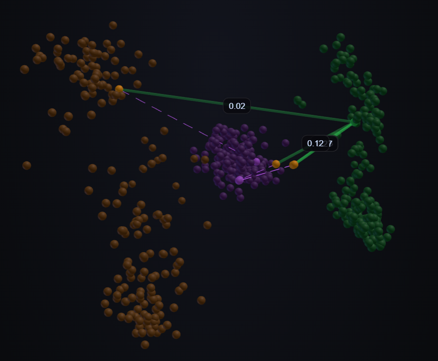

01 — interactive
Attention Visualization
We wanted to see how each token's query, key, and value get projected into their own spaces, and how that geometry ties back to attention. So we lay out the per-(layer, head) Q·K·V in 3D and trace a query to its keys and on to their values. Doing this makes one thing clear: every layer and every head learns its own distinct projection — and that is exactly what gives each one a different role, and why the attention map changes from one to the next.

Q
K
V
│
— Q·K attention
┄ K→V
Attention map
query
key
Drag the Query slider or click a Q node to see its attention.